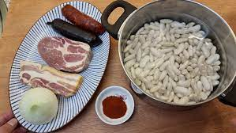

Ingredientes
Pasos para cocinar esta deliciosa fabada
Volver al inicio
Encuesta

Para esta receta vamos a usar productos de la tierra ya que estos nos aseguraran un gran sabor.
500g de
faba asturiana de 1 calidad
250g
panceta curada asturiana
2
chorizos asturianos
2
morcillas asturianas
Agua
200g de
hueso de jamón
Sal
al gusto
3 hebras de
azafrán
Pimentón dulce
al gusto